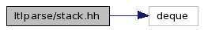

Main Page
Modules
Namespaces
Classes
Files
Directories
Related Pages
File List
File Members
ltlparse
stack.hh File Reference
#include <deque>
Include dependency graph for stack.hh:

Go to the source code of this file.
Namespaces
namespace
ltlyy
Classes
class
ltlyy::stack< T, S >
class
ltlyy::slice< T, S >
Present a
slice
of the top of a
stack
.
More...
Please
comment
this page and
report errors
about it on
the RefDocComments page
.
Generated on Tue Jul 17 15:13:32 2007 for spot by
1.5.2
 1.5.2
1.5.2